Продюсеры казахстанского кино и AI-студия под одной крышей. Taurus Asia Production отвечает за живые съёмки, Neyra Vision — за AI-производство по технологии NEYRA.
Одна команда, три роли: компания, продакшн и технология.
Компания, через которую команда ведёт AI-производство кино и видео. Директор — Анна Чакиртова. Технологическая основа — платформа NEYRA по лицензии Neyra Labs.
Основана Анарой Жунусовой и Анной Чакиртовой. Полнометражное кино, сериалы, документальные проекты. Ведёт живые съёмки, работу с фондами и прокат.
Генерация, превиз, анимация и постпродакшн. Работы студии — «Nusantara: The Story of Gajah Mada», Best Documentary и Спецприз жюри AI Film Awards Cannes 2025.
Разработчик платформы NEYRA: от сценария и раскадровки до шотов, персонажей и сборки фильма. Основатель — Роман Небо.
Картины и сериалы, в которых продюсировали основатели Taurus Asia Production.

Юный батыр, говорящий конь и путь домой через мир, скрытый под степью. Казахская сказка в полном метре по технологии NEYRA.
На Кинопоиске у Анары Жунусовой около тридцати проектов 2015–2026 годов как продюсера и сценариста, среди них «Семь цветков», «Чёрный двор», «Игрок», «1286». Список дополняется.
«Приговор», «Қара бекіре». Ранее — исполнительный продюсер «Томирис» и «Дороги к матери» Акана Сатаева.
Член Национальной киноакадемии и Альянса креативных индустрий.
«Приговор» — «Отечественный фильм года» Freedom Ticketon Awards, «Қара бекіре», сериал «Шекер» (Пусан).
Член Национальной киноакадемии и Альянса креативных индустрий.
Продюсер и шоураннер AI-производства. «Nusantara: The Story of Gajah Mada» — AI Film Awards Cannes 2025. Со-архитектор KADIN AI Academy. Спикер EFM 2026.
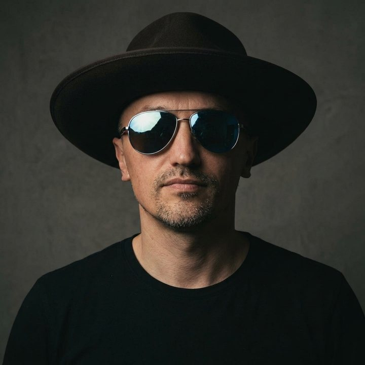
Архитектор платформы NEYRA. Креативный продюсер «Nusantara» и «Wismilak Warisan», соавтор идеи BABY SHARP.

В кино с 1999 года. Основатель Digidez Studio и KenigArts Pictures. Короткий метр «Охотник» — Short Film Corner 66-го Каннского кинофестиваля, финалист Manhattan IFF. Режиссёр «Орды» и BRO, автор BABY SHARP.
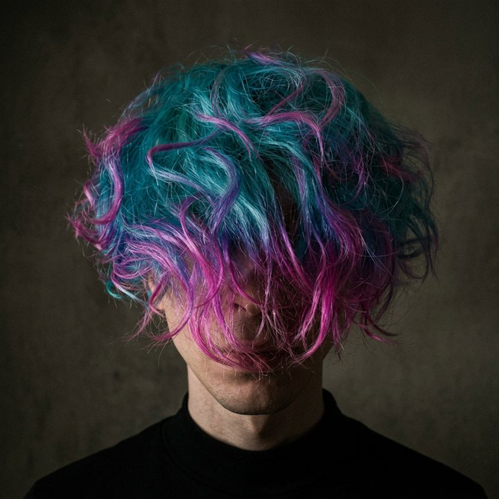
Сопродюсер, POV-оператор и автор шлема-рига фильма «Хардкор» Ильи Найшуллера — первого полнометражного боевика от первого лица, вышедшего в 60+ странах. Клип Biting Elbows «Bad Motherfucker». 150+ проектов: Fendi, Adidas, TikTok, Playboy, «Мумий Тролль». Сейчас — Full CG как продюсер и художник.
Арт-директор постпродакшна «Дело-СЛ», генеральный продюсер «Генерального продюсерского центра» (Минск), креативный продюсер «А-Медиа». Режиссёр монтажа и постановщик рекламы: Telegram, TON, СИБУР. «Семейные драмы» (РЕН ТВ), «Новогодний ремонт», «Криминальная работа для начинающего». CGI-дизайн Drive369. Участник двух православных кинофестивалей.
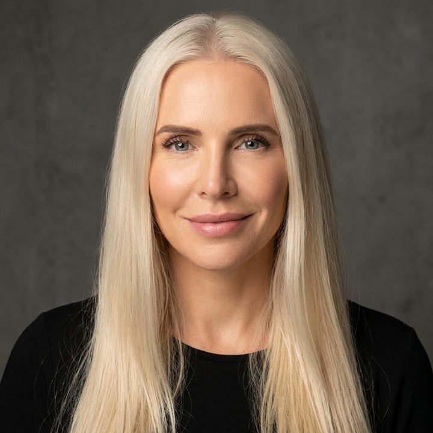
Продюсер, соавтор сценария и исполнительница главной роли американо-российского фильма «See You Soon» («До скорой встречи», 2019) — премьеры в России и США. Продюсер тизера BRO.
Ведёт выход наших проектов к дистрибьюторам в США и России.
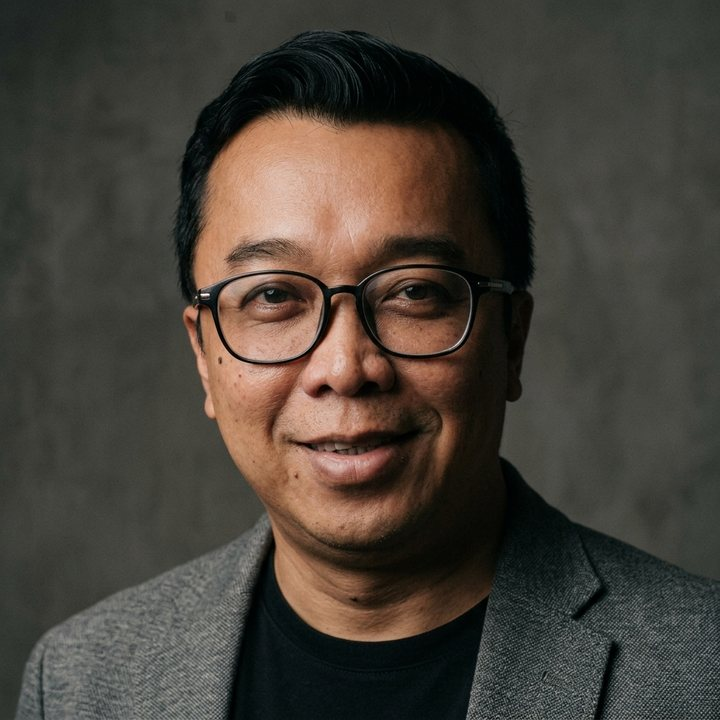
Шоураннер и кинопродюсер, 20+ лет в индустрии. Продюсер «Nusantara: The Story of Gajah Mada». Исполнительный продюсер «Negeri 5 Menara», «Sang Penari», «5 Elang», «Garuda di Dadaku 2»; режиссёр «Vina Bilang Cinta» и «Si Geboy».
Indonesian Idol, Stand Up Comedy Indonesia, Puteri Indonesia; запуск Kompas TV; главный режиссёр открытия SEA Games 2011. Член жюри International Emmy Awards. Vancouver Film School.
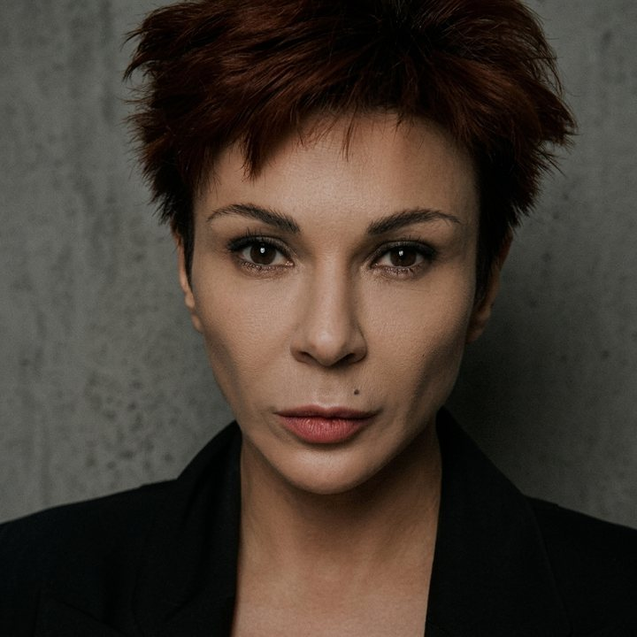
Режиссёр, продюсер, актриса. Основатель Stellar Vision (Пхукет) — PR и медиа-агентство полного цикла. Щукинское училище (курс Ширвиндта), Высшие курсы сценаристов и режиссёров (мастерская Меньшова).
Более 40 ролей в кино и сериалах: «Моя прекрасная няня», «Солдаты», «Студенты», «След», «Дылды», «Rockфор». Короткий метр «Близость.net» — приз Meters и победа на «Зелёном яблоке». Генеральный продюсер Luxema Production. Режиссёр проекта «Яхта».
Выпускник New York Film Academy, стипендиат «Болашак». Сериалы «Игрок», «Чёрная икра», «4 градуса» — номинант Global OTT Awards (Busan IFF). Полнометражный дебют «Бүркітші» («Казахфильм», 2026).
Автор картины «Матка» (Taurus Asia Production).
Автор мира Nectarium и романа «Планета Nectarium», профессиональный пчеловод. Учится режиссуре в New York Film Academy.
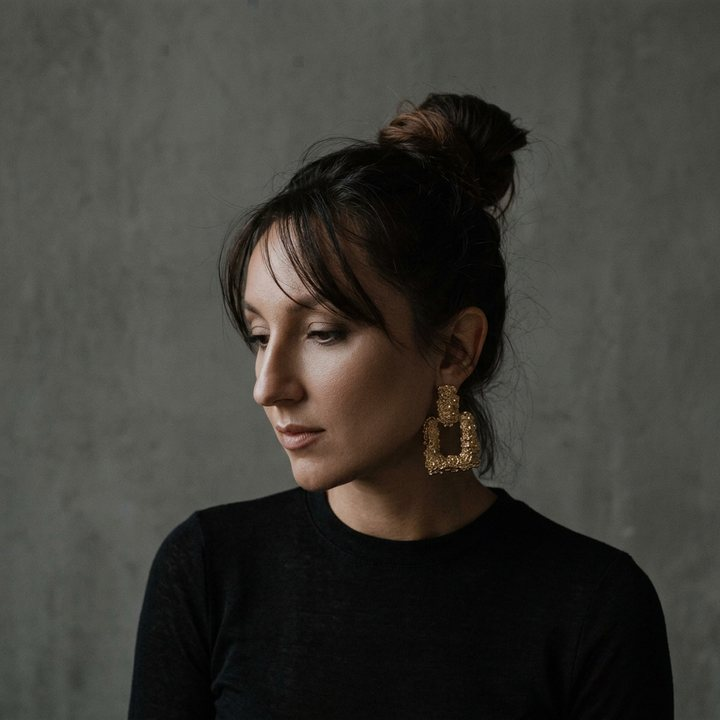
Руководит 2D-группой: подготовка и ретушь изображений, композитинг, генерация, единый стандарт кадра. Ведёт сроки и приёмку работы художников.
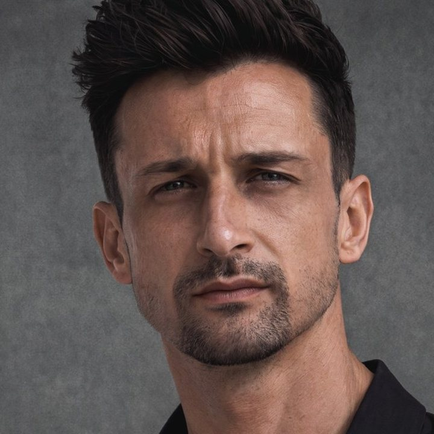
15 лет в визуальном продакшене, 9 из них — Дубай и Азия. Subaru, Motul, Kixx; публикации в L’Officiel, TIMES, MAXIM. 13 лет преподаёт свет и композицию.
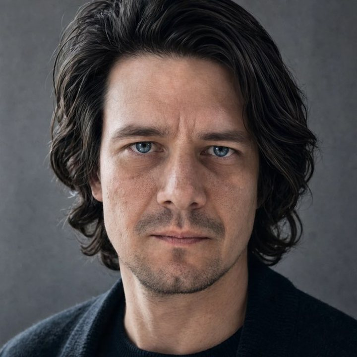
16 лет в видеопроизводстве, 10 — в операторских группах кино, сериалов и рекламы: «Интерны», «След», «Про любовь 2». AI-видео по раскадровке, композитинг, клинап, трекинг, интеграция актёров и продуктов. Газпромнефть, Kaspersky, KFC; полтора года руководил анимационным отделом сериального проекта для Okko.
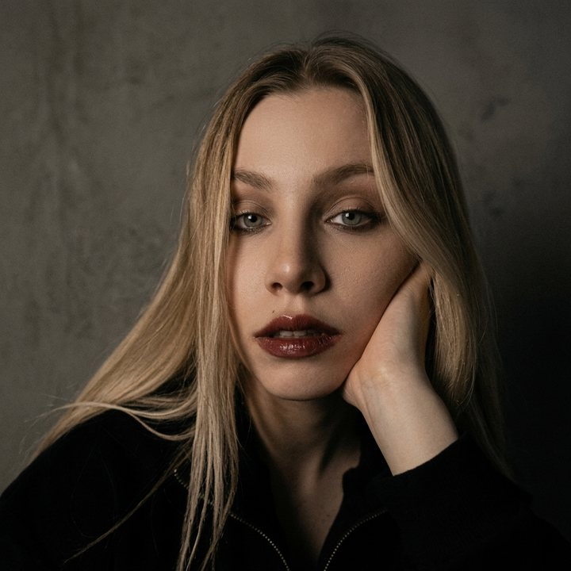
Подготовка и ретушь изображений, композитинг, генерация. Концепт, визуальный дизайн и анимация короткометражки Drive369 Neyra Vision Studio.
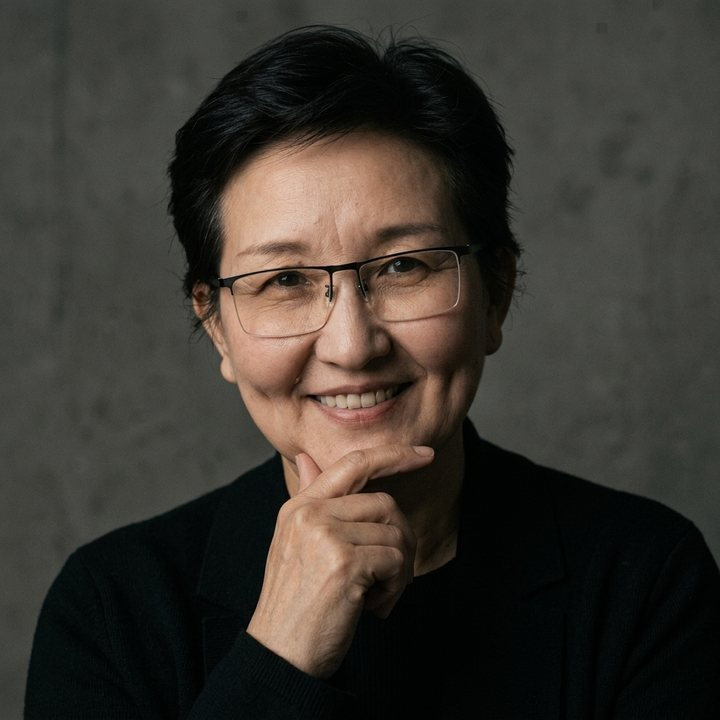
С 2002 года, школа «Казахфильма». Более 60 картин: «Тюльпан», «Шиза», «Баксы», «Шуга», «Путь Лидера», «Маленький Самурай». В «Бөрі» — образ оборотня.
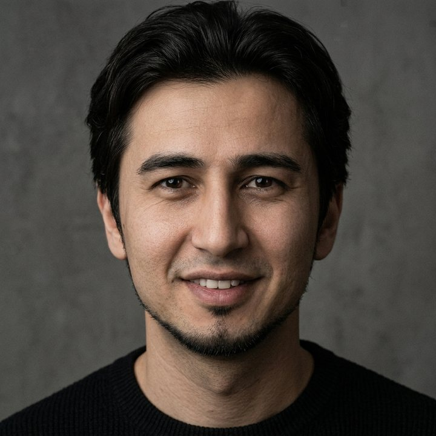
Оператор-постановщик «Бөрі» и полнометражного «Бүркітші» Куаныша Стаханова («Казахфильм», 2026). Сериалы «Street Hana» (Кинопоиск, 2025), «4 градуса» (2025), «Ж/Б» (2024), короткий метр «Үрей» (2024) — Salem Entertainment.
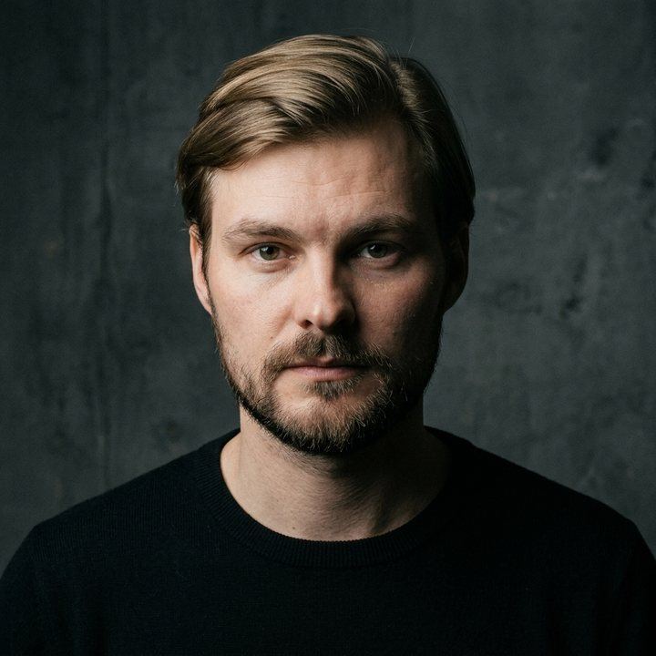
ВГИК (оператор) и Высшие курсы сценаристов и режиссёров. 15 полнометражных фильмов, 8 из них — главным оператором; сериалы для ТНТ, СТС и Первого канала. «О чём ещё говорят мужчины», «Пятница», «Кухня. Война за отель», «Отпуск»; второй блок «Дневного дозора», «Перевала Дятлова» и «Годунова» («Золотой орёл»). Оператор-постановщик BRO.
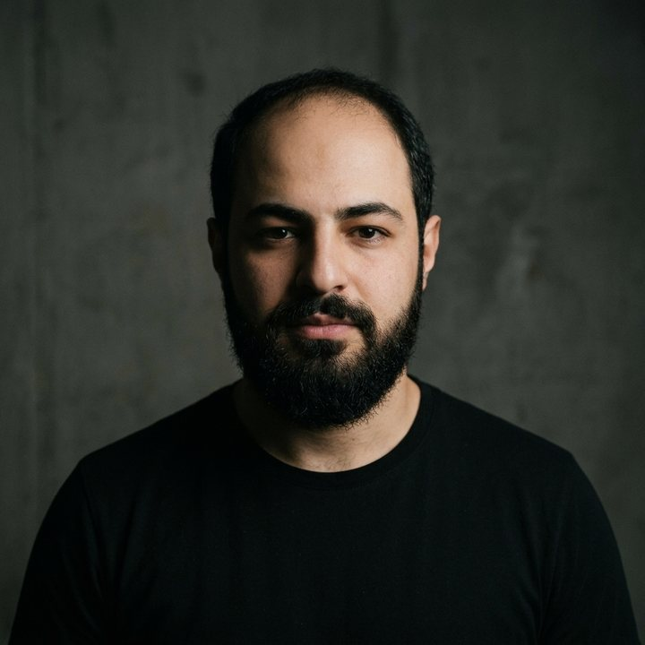
Основатель Berberyan Production Studios (Армения): оригинальная музыка, запись оркестра, звуковой постпродакшн. Композитор шести фильмов, которые Армения выдвигала на «Оскар» за лучший иностранный фильм. «Amerikatsi» («Американец»), «Songs of Solomon» — премия «Анаит» за лучшую оригинальную музыку. Композитор BRO.
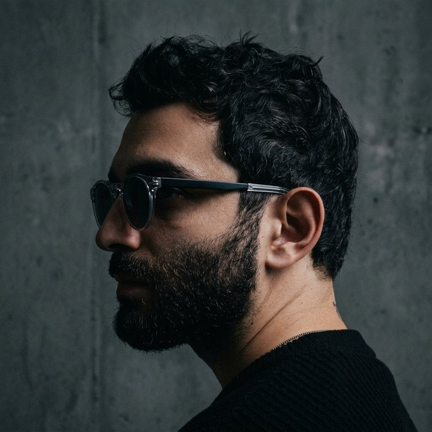
OMNI — креативный продакшн с 2016 года, с филиалом в Дубае: реклама, клипы, фото, сервис-продакшн. SACCADE — AI-студия Аша: 30+ рекламных роликов, 500+ key visuals и постеров, проекты для Google.
Короткий метр SCRATCH — 3-е место Higgsfield Action Contest из 8 752 работ. Сейчас студия работает над полным метром для мирового проката.
Фильм, сериал, тизер или реклама — живые съёмки и AI-производство в одной команде.